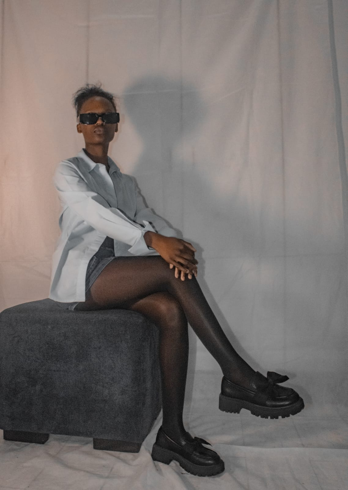
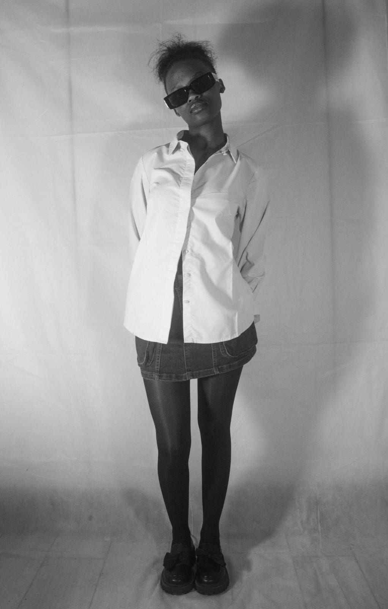
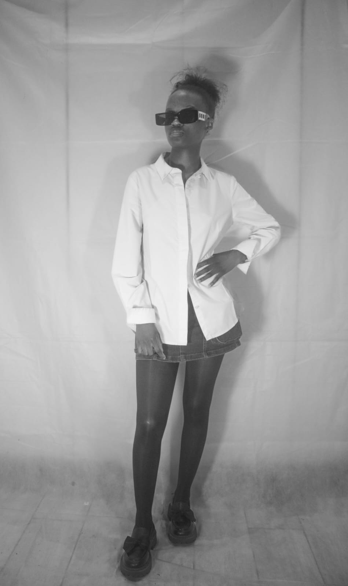
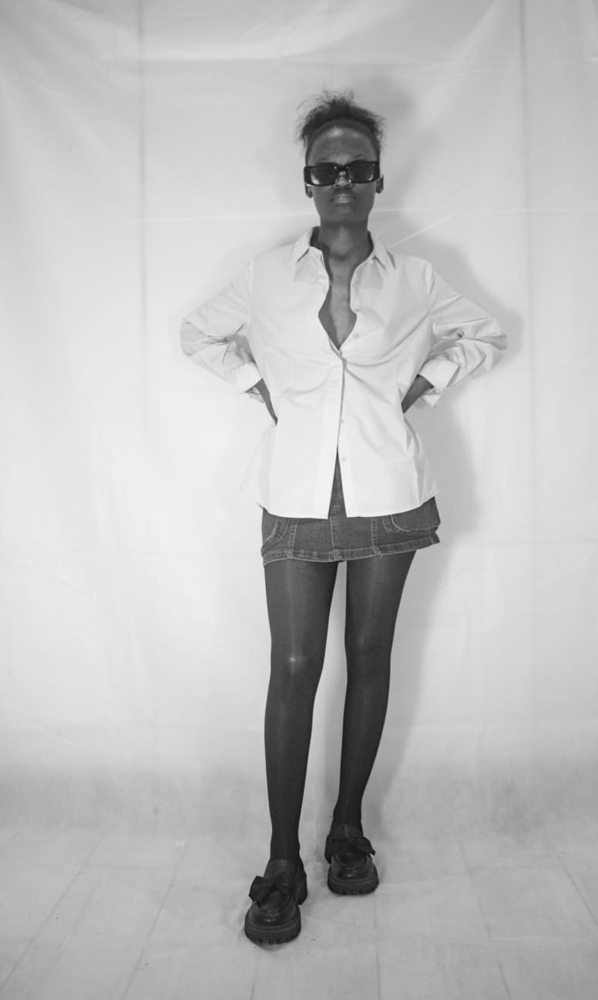

MONOCHROME · EDITORIAL · 06 FRAMES
Studio
Stripped of scenery and colour, the studio becomes a study of shape, expression, posture and light.






Stripped of scenery and colour, the studio becomes a study of shape, expression, posture and light.



